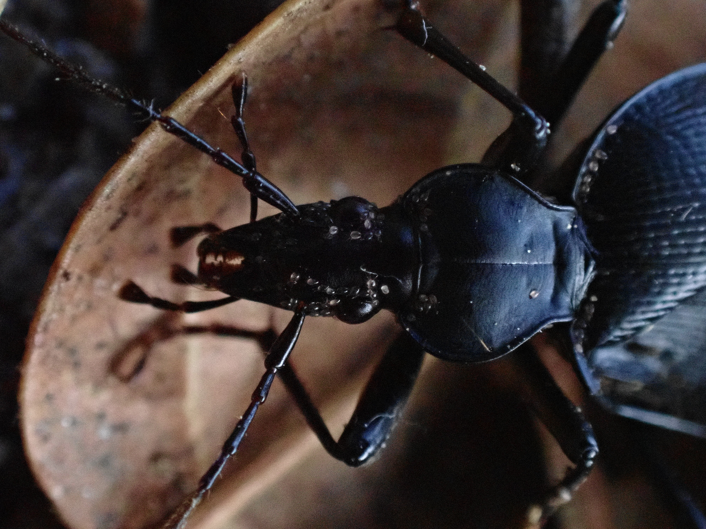
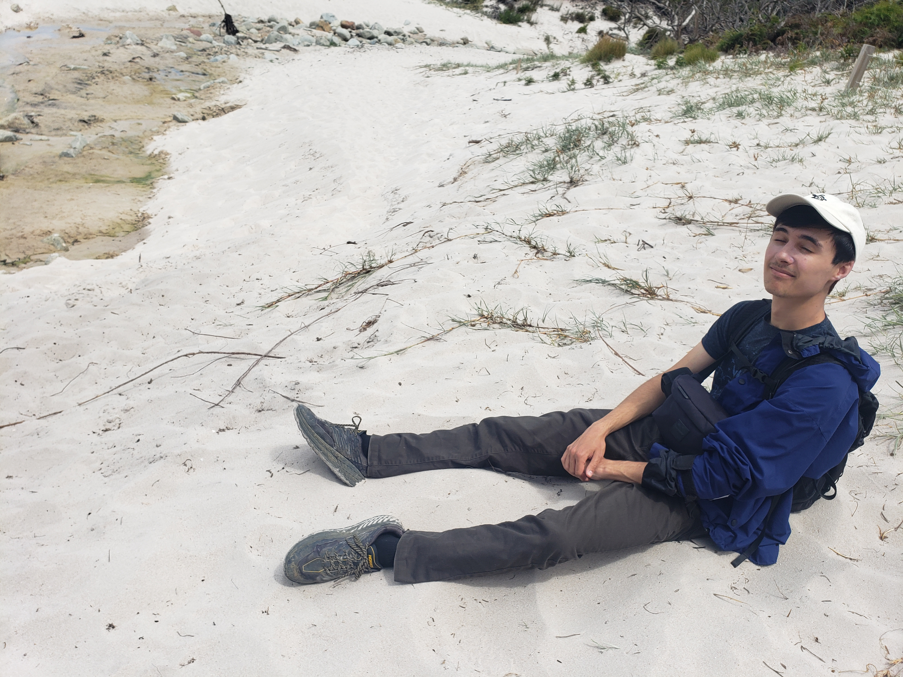
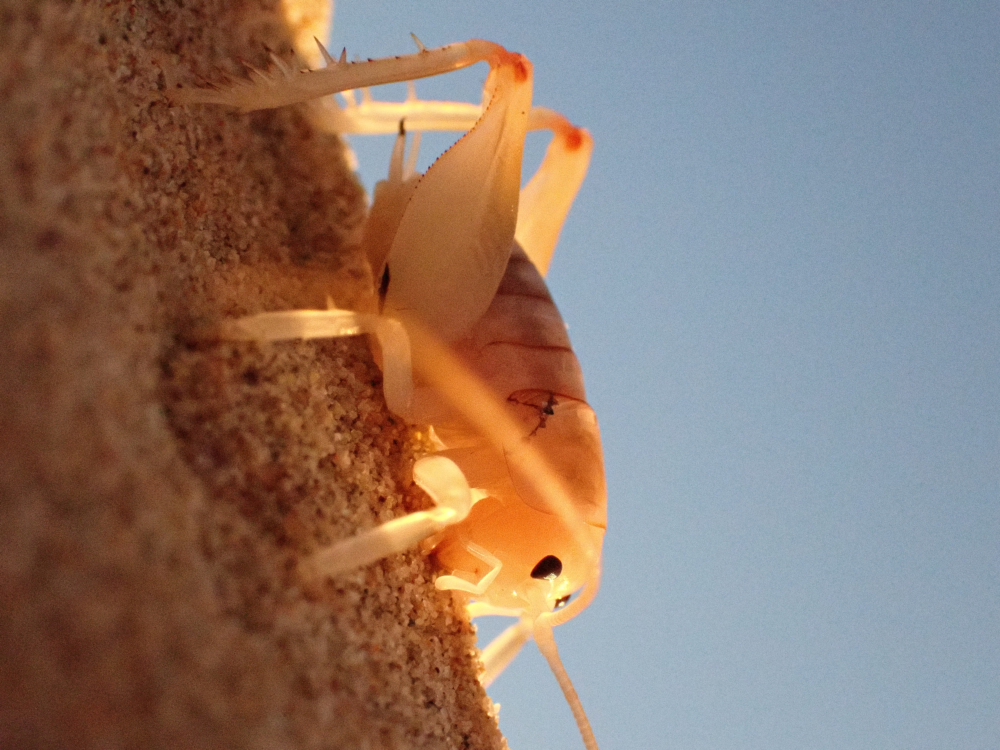

Hello! Welcome to my website. I'm a computer programmer and naturalist. I'm partially using this space as a portfolio (see photography (WIP) and research above), and I also have a fun project (see biodex above) that uses iNaturalist data. I use iNat pretty heavily (mainly as an observer) so my personal projects and research have been largely inspired from the great wealth of data on iNat.


